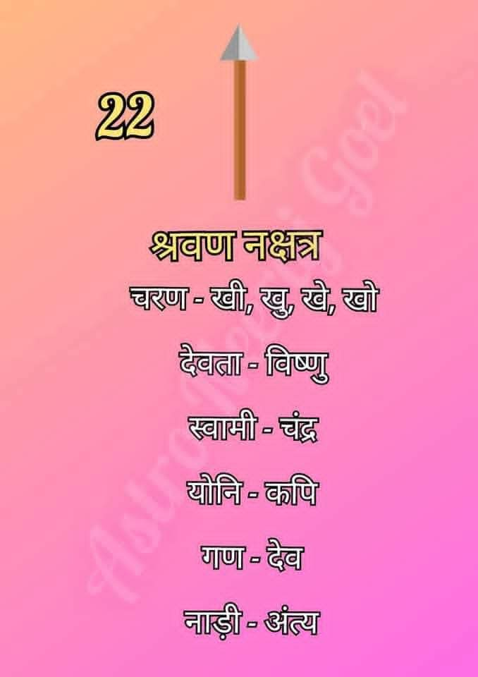

श्रवण नक्षत्र (Shravana Nakshatra)
श्रवण नक्षत्र आकाश मंडल का बाईसवां नक्षत्र है। इसका शाब्दिक अर्थ 'सुनना' है। इसे ज्ञान, शिक्षा और सुनने की क्षमता का प्रतीक माना जाता है। इसके अधिष्ठाता देव भगवान विष्णु हैं।

सामान्य स्वभाव:
श्रवण नक्षत्र में जन्मे जातक अत्यंत मिलनसार, बुद्धिमान और दूसरों की बात ध्यानपूर्वक सुनने वाले होते हैं। ये जन्मजात जिज्ञासु होते हैं और ज्ञानार्जन के प्रति सदैव तत्पर रहते हैं।
श्रवण नक्षत्र की मुख्य विशेषताएँ
- उत्तम श्रोता: ये दूसरों की समस्याओं को धैर्यपूर्वक सुनते हैं और उचित सलाह देते हैं।
- ज्ञान के प्रति प्रेम: इन्हें नई चीजें सीखना और विभिन्न विषयों का अध्ययन करना बहुत पसंद होता है।
- विनम्रता: स्वभाव से ये बहुत ही शिष्ट और मृदुभाषी होते हैं।
- व्यवस्थित जीवन: ये अपने कार्यों को योजनाबद्ध और व्यवस्थित तरीके से करना पसंद करते हैं।
- आध्यात्मिक झुकाव: ये धर्म, संस्कृति और पारंपरिक मूल्यों के प्रति गहरी निष्ठा रखते हैं।
शिक्षा एवं करियर
श्रवण नक्षत्र के जातक अपनी संचार कुशलता और ज्ञान के कारण निम्नलिखित क्षेत्रों में बहुत सफल होते हैं:
- शिक्षा और शिक्षण कार्य (Teaching & Education)
- परामर्श एवं थेरेपी (Counseling & Therapy)
- जनसंपर्क और पत्रकारिता (PR & Journalism)
- साहित्य एवं लेखन (Literature & Writing)
- भाषा और अनुवाद कार्य (Languages & Translation)